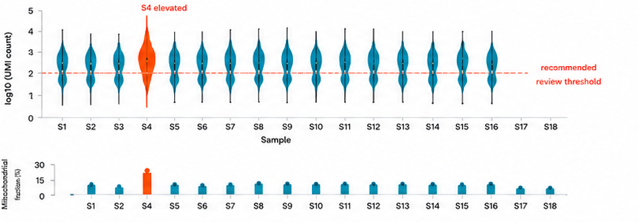

Figure: Per-cell depth distribution
Per-cell depth distribution across samples
!
QC
Draft
18 samples
Dataset: ID5521
Generated: 10:18 AM

Guide · focused on this figure
Today
PP
Peter10:22 AM
What does this QC figure tell us?
Guide10:22 AM
Most samples have comparable per-cell depth distributions. Sample S4 is higher than the others and also elevated in mitochondrial fraction. I recommend inspecting S4 before making filtering decisions.
PP
Peter10:23 AM
Is S4 bad enough to exclude?
Guide10:23 AM
Not automatically. This could reflect stressed cells, overloading, or a library-specific issue. The safest next step is to compare downstream QC with and without S4.